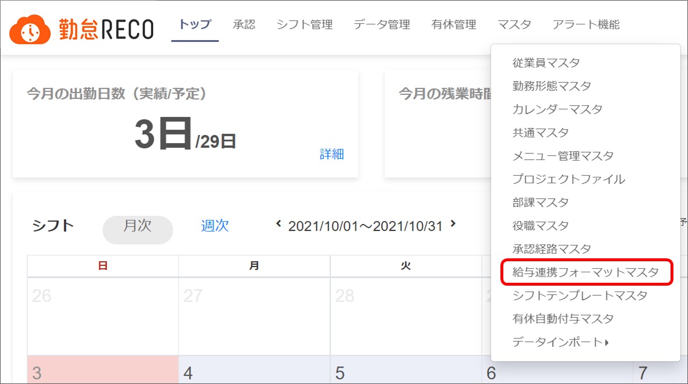
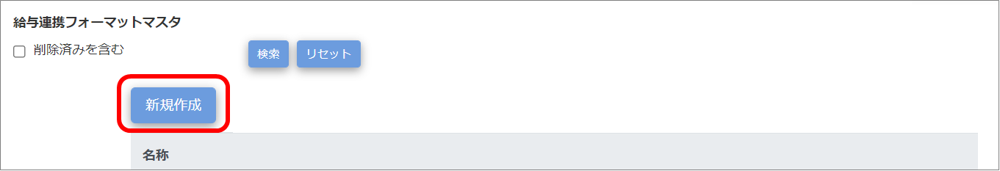
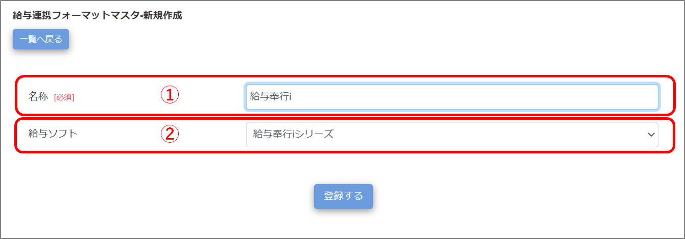
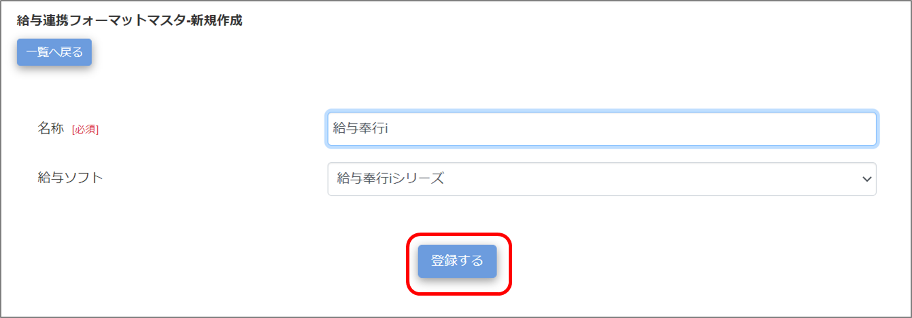
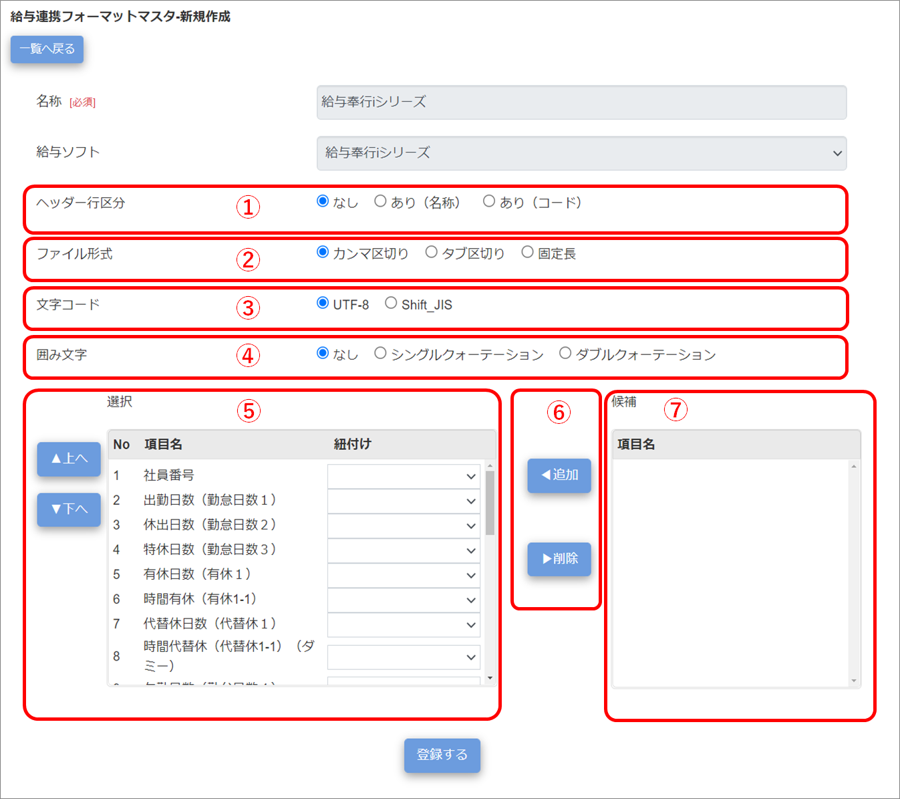
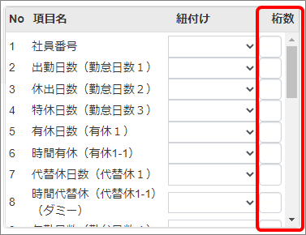
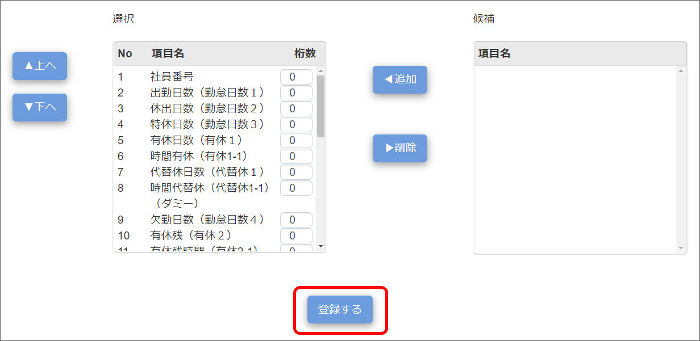
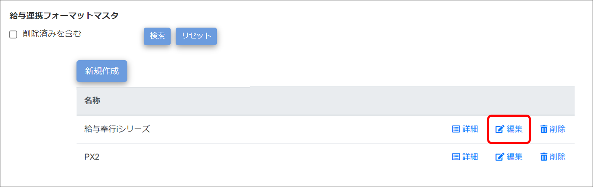
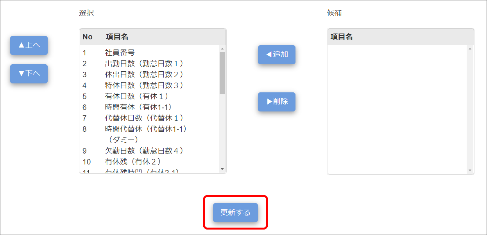

給与連携フォーマットマスタの登録
給与連携フォーマットマスタを登録します。
登録した給与連携フォーマットマスタは、［給与連携ソフトCSV出力］でデータ出力する際に使用します。
※弥生給与用のデータは［CSV出力］で出力できるため、設定不要です。
登録は［給与連携フォーマットマスタ］画面で実施します。
ご注意 |
給与連携フォーマットマスタを操作できるのは、システム管理者アカウントのみです。 |
|---|
給与連携フォーマットマスタを登録する
-
［マスタ］をクリックし、［給与連携フォーマットマスタ］をクリックする

「給与連携フォーマットマスタ」画面が表示されます。
-
［新規作成］ボタンをクリックする

「給与連携フォーマットマスタ-新規作成」画面が表示されます。
-
各項目を入力する

-
名称
給与連携フォーマット名を設定します（最大255文字）。
-
給与ソフト
ドロップダウンリストから給与ソフトを選択します。
-
すべて
※すべての給与ソフト用出力項目を出力できます。
-
給与奉行iシリーズ
-
給与奉行クラウド
-
PX2（TKC 戦略給与情報システム）
-
勤怠RECOCSV出力
※データ管理の［CSV出力］の項目を選択肢として出力できます。
ヒント
給与ソフトの選択肢は以下の通りです。
-
-
［登録する］ボタンをクリックする

選択した給与ソフトのフォーマットが展開されます。
-
フォーマットの設定を確認する

-
ヘッダー行区分
ヘッダー行の出力有無を設定します。
TKC戦略給与情報システム：「あり（コード）」
給与奉行iシリーズ：「あり（コード）」
-
ファイル形式
出力項目の区切り文字を設定します。
「固定長」を選択すると、「ヘッダー行区分」「文字コード」「囲み文字」の設定変更ができなくなり、出力項目に桁数設定ができるようになります。
TKC戦略給与情報システム：「カンマ区切り」
給与奉行iシリーズ：「カンマ区切り」

-
文字コード
出力データの文字コードを設定します。
TKC戦略給与情報システム：利用PCがWindowsの場合「Shift_JIS」、MacPCの場合「UTF-8」
給与奉行iシリーズ：「Shift_JIS」
-
囲み文字
出力項目の囲み文字を設定します。
TKC戦略給与情報システム：「なし」
給与奉行iシリーズ：「ダブルクォーテーション」
-
出力項目選択
CSVデータへ出力する項目の並び順を変更します。
並び順を変更したい項目を選択し、「上へ」「下へ」をクリックして変更します。
給与ソフトによって出力内容が異なる項目に、勤怠RECOCSV出力項目を紐づける場合は、セレクトボックスの「紐付け」から項目を選択します。
-
追加・削除
出力項目の追加、削除を行います。
追加、削除したい項目を選択し、「追加」「削除」をクリックして変更します。
-
出力項目候補
「給与ソフト」に設定したソフトにおいて、出力できる項目を表示します。
「追加」で選択エリアに項目を移動すると、候補エリアには表示されなくなります。
-
-
［登録する］ボタンをクリックする

画面上部に「登録が完了しました。」とメッセージが表示され、給与連携フォーマット情報がマスタデータに登録されます。
給与連携フォーマットマスタを確認・編集・削除する
-
［マスタ］をクリックし、［給与連携フォーマットマスタ］をクリックする
「給与連携フォーマットマスタ」画面が表示されます。
-
編集したい給与連携フォーマットマスタの［編集］をクリックする
削除した給与連携フォーマットを検索する場合は「削除済みを含む」にチェックを付けます。

ヒント
-
［詳細］をクリックすると、選択した給与連携フォーマットマスタの登録内容を確認できます。確認が済んだら［一覧へ戻る］ボタンで「給与連携フォーマットマスタ」画面に戻ります。
-
［削除］をクリックすると、選択した給与連携フォーマットマスタを削除します。
「給与連携フォーマットマスタ-編集」画面が表示されます。
-
-
変更したい項目を修正する
-
［更新する］をクリックする

画面上部に「更新が完了しました。」とメッセージが表示され、給与連携フォーマットマスタの変更情報がマスタデータに登録されます。
削除を元に戻したい場合は、「削除済みを含む」にチェックを付けて検索し、「給与連携フォーマットマスタ-編集」画面で削除済みチェックを外して登録してください。